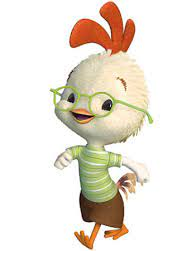

Un joven pollito y sus amigos se unen para salvar a los escépticos habitantes de su comunidad de un ataque extraterrestre.
Fecha de estreno: 4 de noviembre de 2005 (México)
Director: Mark Dindal
Historia de: Mark Dindal, Mark D. Kennedy
Duración: 1h 21m
Presupuesto: 150 millones USD, 60 millones USD
